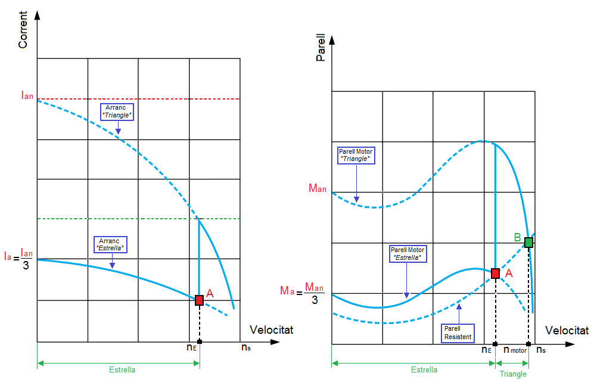

Corbes de Parell i Intensitat

- Ian: Intensitat d'arranc en connexió "Triangle".
- Ia: Intensitat d'arranc en connexió "Estrella".
- Man: Parell d'arranc en connexió "Triangle".
- Ma: Parell d'arranc en connexió "Estrella".
- nE: velocitat que té el motor quan es produeix el canvi "Estrella-Triangle".
- nmotor: velocitat nominal del motor.
En l'arranc "Estrella-Triangle" hem d'aconseguir que el motor aconsegueixi la màxima velocitat possible abans de canviar a "Triangle". Si ens fixem en la gràfica de la dreta (corba de parell) el motor accelerará mentre el parell motor o força de gir que fa el motor sigue més gran que el parell resistent. En el moment que aquestes dues corbes tinguin el mateix valor (Punt A) el motor arriba a un règim estable i ja no accelerarà més. És en aquest instant és quan cal fer el canvi a "Triangle" i permetre que el motor segueixi accelerant fins a trobar un altre punt d'estabilitat que serà quan s'ajuntin la corba de parell resistent que és la mateixa d'abans amb la nova corba de parell motor connectat a triangle (Punt B). Amb això hem aconseguit limitar el corrent d'arrencada per sota de la línia verda. Sense l'arranc "Estrella-Triangle" se'ns hauria anat fins la línia roja.
Llicenciat sota la Llicència Creative Commons Reconeixement CompartirIgual 4.0